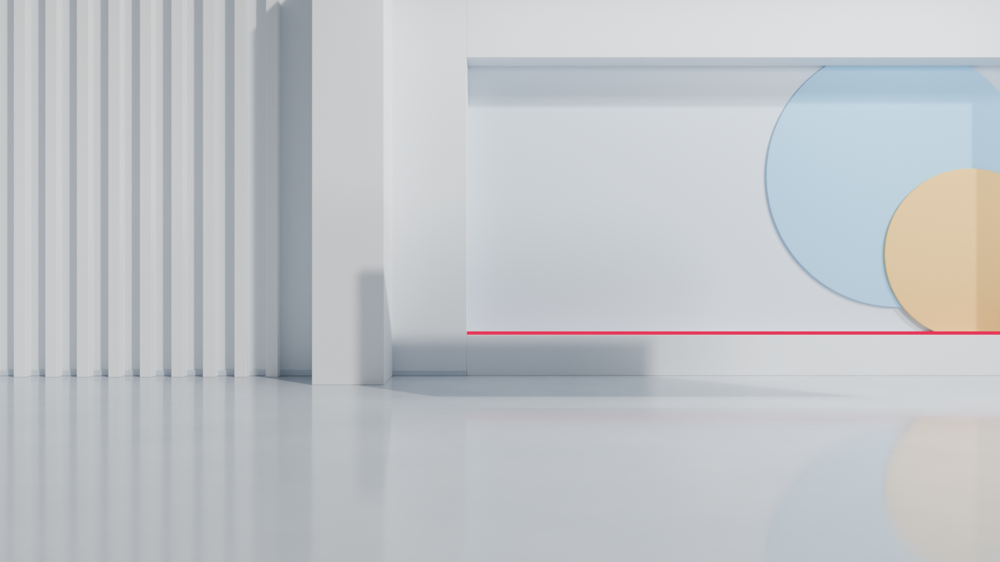

Vraag van de week
Een video analyseren met AI?
Kun je een video laten analyseren zonder hem zelf volledig te bekijken?
Goed om te weten
Een video is beeld én geluid.
Beeld
Geluid
Niet elke AI-tool analyseert beide even goed.
Resultaat
Voorbeeld
Van video naar overzicht.
00:12Inzicht 1
00:25Inzicht 2
00:48Inzicht 3
Zo vind je gericht de relevante fragmenten terug.
Jouw opname
!Controleer de inhoud en tijdcodes altijd.
GenAI Kennishub
Hack of
the Week
the Week
#001
Demonstratie
Probeer het zelf.
Upload een niet-vertrouwelijke video naar bijvoorbeeld Gemini en gebruik deze prompt:
Nagebootst scherm
AI-assistentbijvoorbeeld Gemini
voorbeeld.mp4
Analyseer het beeld en het geluid van deze video. Geef de drie belangrijkste inzichten en vermeld bij elk inzicht de tijdcode.
Analyseer het beeld en het geluid van deze video. Geef de drie belangrijkste inzichten en vermeld bij elk inzicht de tijdcode.
Bezig met analyseren
voorbeeld.mp4 · 0:58
Analyseer het beeld en het geluid van deze video. Geef de drie belangrijkste inzichten en vermeld bij elk inzicht de tijdcode.
GenAI Kennishub
Ontdek. Leer. Experimenteer.
Elke vrijdag: kom langs in D210
Mail of Teams: voornaam.naam@ucll.be
Hack of the Week · #001